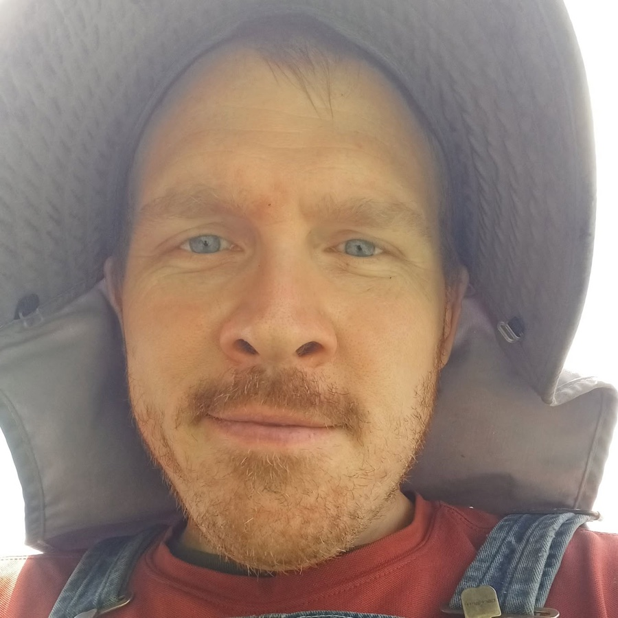

A Marine Corps veteran, local business owner, and farmer running to put Warrenville's community first — taking down the Flock cameras, keeping data centers out, and bringing native plants to our bare, unused spaces.
Three problems I hear about again and again from neighbors around Ward 4.
Nobody in Ward 4 voted on the Flock license-plate cameras watching our streets, and the council has delayed action despite residents asking why they're still up. I'll bring a real vote to the table and fight to get them removed.
Warrenville doesn't need a data center draining our power grid and water supply to prop up someone else's server farm. I'll oppose data center development in and around our town and push the council to protect our land for the people who actually live here.
Too many bare, unused spaces around town could be doing more for us — less mowing, less runoff, more pollinators. As a farmer, I want to help the city introduce native plantings to these spaces and make Warrenville a little greener and a little wilder.

I served in the Marine Corps before coming home to run a local business and a farm here in Warrenville, and I've seen firsthand what happens when city decisions get made without making residents aware.
Community needs should come before private interests. I'm running to bring more residents into local politics — not just at election time, but in the everyday decisions that shape our neighborhoods.
Ward 4 wins this by showing up. Here's how to help.
Let people on your street know a candidate is actually listening to popular Warrenville issues.
Help with canvassing, yard signs, or a few hours at a community event before election day.
Make sure you're registered at your current Ward 4 address and have a plan to vote.